V1
logo-h-text.2000.png
Representative file created
File modified

12 indexed source exports / one preview
mediprospects.ai/v1/icon-black.pngmediprospects.ai/v1/logo.pngmediprospects.ai/v1/fb-logo.jpgmediprospects.ai/v1/home-logo3.pngmediprospects.ai/v1/logo-green.pngmediprospects.ai/v1/logo2000.pngmediprospects.ai/v1/icon-white.pngmediprospects.ai/v1/logo-h-text.2000.pngmediprospects.ai/v1/home-logo2.pngmediprospects.ai/v1/logo.b.2000.pngmediprospects.ai/v1/logo.g.2000.pngmediprospects.ai/v1/menu-logo.png